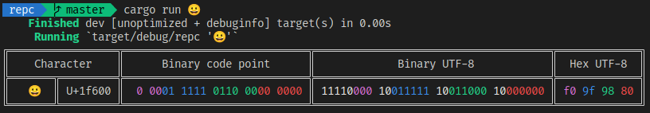

Character Encoding Cheatsheet
Bit representations
- One byte has 8 bits:
0000_0000 - F = 15, 4 bits
- For a hexadecimal number
0xFEFF, in big endian order it appears asFEFF, in little endian order it isFFFE - ASCII:
- Extended ASCII:
- UCS-2(or UTF-16), 2 bytes, 16 bits
- UTF-8:
- first byte is the count byte: indicates the number of bytes for the code point
- U+0000 through U+10FFFF
- surrogate pair,
U+D800throughU+DFFF, reserved by the unicdoe standard- U+D800 ~ U+DBFF, 1024 code points, high-surrogate code points
- U+DC00 ~ U+FFFF, 1024 code points, low-surrogate code points
- high + low = surrogate pair
- 55 non characters: U+FDD0 ~ U+FDEF
- private-use code points, no interpretation specified by the unicode standard
- Private Use Area: U+E000–U+F8FF (6,400 characters),
- Supplementary Private Use Area-A: U+F0000–U+FFFFD (65,534 characters),
- Supplementary Private Use Area-B: U+100000–U+10FFFD (65,534 characters).
- UTF = unicode transformation format
- UTF-8 and UTF-16 are the most commonly used encodeings
- originally developed of Plan 9
- UCS = Universal Coded character set
- UCS-2
- is an obsolete subset of UTF-16
- introduce BOM, code point U+FEFF
- UCS-2
- use 1 to 4 bytes per code point
Notations
- Unicode:
U+205AC, U+1F9C0 - UTF-8 code point:
c3a9 - Escape style:
\xee\x82\xb0 - decimal/hex/named HTML/XML entity
➨
Tools
Hexeditor Extension for VSCode
xxd
$ echo a | xxd
00000000: 610a a.
$ echo a | xxd -b
00000000: 01100001 00001010 a.
Python
>>> "{:x}".format((15))
'f'
>>> "{:x}".format((0b100100 ^ 0b10000000))
'a4'
>>> "{:b}".format((0b100100 ^ 0b10000000))
'10100100'
Bash
$ printf '%x\n' "$((144))"
90
# pass character to Rust program that can't interpret private use unicodes
$ cargo run $(print '\xee\x82\xb0')
Programming
Rust
In Rust, the most significant byte appears as the first byte if you break a character down to bytes with bytes(), as_bytes, or chars() methods.
You are welcome to check out this command line tool I wrote in Rust.

Javascript
Javascript stores characters in UTF-16 format
> "😀".length
2
> "😀".charCodeAt(0)
55357
> "😀".charCodeAt(1)
56832